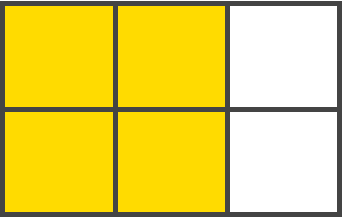
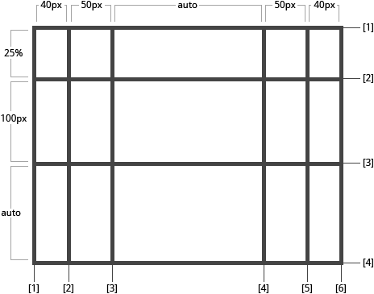
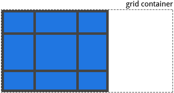
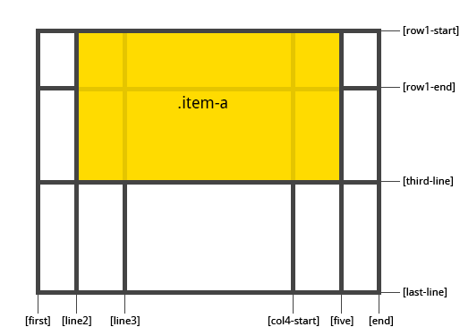
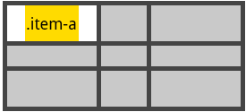
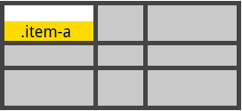
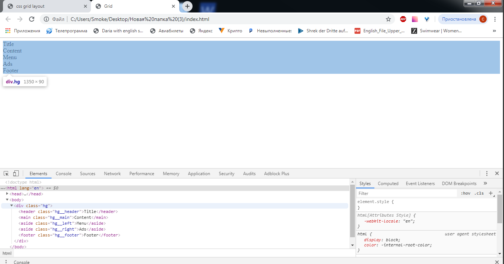
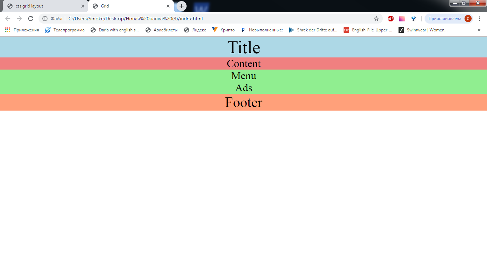

css grid layout
Created by Alimova Christina
Introduction
CSS Grid Layout introduces a two-dimensional grid system to CSS. Grids can be used to lay out major page areas or small user interface elements.
Important Terminology
Grid Container
The element on which display: grid is applied. It's the direct parent of all the grid items. In this example container is the grid container.
Grid Item
The children (e.g. direct descendants) of the grid container. Here the item elements are grid items, but sub-item isn't.
Grid Line
The dividing lines that make up the structure of the grid. They can be either vertical ("column grid lines") or horizontal ("row grid lines") and reside on either side of a row or column. Here the yellow line is an example of a column grid line.
Grid Track
The space between two adjacent grid lines. You can think of them like the columns or rows of the grid. Here's the grid track between the second and third row grid lines.
Grid Cell
The space between two adjacent row and two adjacent column grid lines. It's a single "unit" of the grid. Here's the grid cell between row grid lines 1 and 2, and column grid lines 2 and 3.
Grid Area
The total space surrounded by four grid lines. A grid area may be comprised of any number of grid cells. Here's the grid area between row grid lines 1 and 3, and column grid lines 1 and 3.

Grid Properties
Properties for the Grid Container:
Properties for the Grid Items
Properties for the grid container
Defines the element as a grid container and establishes a new grid formatting context for its contents.
Values:grid - generates a block-level grid
inline-grid - generates an inline-level grid
subgrid - if your grid container is itself a grid item (i.e. nested grids), you can use this property to indicate that you want the sizes of its rows/columns to be taken from its parent rather than specifying its own.
.container {
display: grid | inline-grid |subgrid;
}
grid-template-rows
Defines the columns and rows of the grid with a space-separated list of values. The values represent the track size, and the space between them represents the grid line.
Values:"track-size" - can be a length, a percentage, or a fraction of the free space in the grid (using the fr unit)
"line-name" - an arbitrary name of your choosing
.container {
grid-template-columns: 40px 50px auto 50px 40px;
grid-template-rows: 25% 100px auto;
}

Defines a grid template by referencing the names of the grid areas which are specified with the grid-area property. Repeating the name of a grid area causes the content to span those cells. A period signifies an empty cell. The syntax itself provides a visualization of the structure of the grid.
Values:"grid-area-name" - the name of a grid area specified with grid-area
. - a period signifies an empty grid cell
none - no grid areas are defined
.item-a {
grid-area: header;
}
.item-b {
grid-area: main;
}
.item-c {
grid-area: sidebar;
}
.item-d {
grid-area: footer;
}
.container {
grid-template-columns: 50px 50px 50px 50px;
grid-template-rows: auto;
grid-template-areas: "header header header header"
"main main . sidebar"
"footer footer footer footer"
}
grid-row-gap
Specifies the size of the grid lines. You can think of it like setting the width of the gutters between the columns/rows.
Values:"line-size" - a length value
.container{
grid-template-columns: 100px 50px 100px;
grid-template-rows: 80px auto 80px;
grid-column-gap: 10px;
grid-row-gap: 15px;
}

Aligns the content inside a grid item along the column axis (as opposed to align-items which aligns along the row axis). This value applies to all grid items inside the container.
Values:start - aligns the content to the left end of the grid area
end - aligns the content to the right end of the grid area
center - aligns the content in the center of the grid area
stretch - fills the whole width of the grid area (this is the default)
.container {
justify-items: start | end | center | stretch;
}
.container {
justify-items: start;
}
.container {
justify-items: end;
}
.container {
justify-items: center;
}
.container {
justify-items: stretch;
}

Aligns the content inside a grid item along the row axis (as opposed to justify-items which aligns along the column axis). This value applies to all grid items inside the container.
Values:start - aligns the content to the top of the grid area
end - aligns the content to the bottom of the grid area
center - aligns the content in the center of the grid area
stretch - fills the whole height of the grid area (this is the default)
.container{
align-items: start | end | center | stretch;
}
.container{
align-items: start;
}
.container{
align-items: end;
}
.container{
align-items: center;
}
.container{
align-items: stretch;
}
Sometimes the total size of your grid might be less than the size of its grid container. This could happen if all of your grid items are sized with non-flexible units like px. In this case you can set the alignment of the grid within the grid container. This property aligns the grid along the column axis (as opposed to align-content which aligns the grid along the row axis).
start - aligns the grid to the left end of the grid container
end - aligns the grid to the right end of the grid container
center - aligns the grid in the center of the grid container
stretch - resizes the grid items to allow the grid to fill the full width of the grid container
space-around - places an even amount of space between each grid item, with half-sized spaces on the far ends
space-between - places an even amount of space between each grid item, with no space at the far ends
space-evently - places an even amount of space between each grid item, including the far ends
.container{
justify-content: start | end | center | stretch | space-around | space-between | space-evenly;
}
.container{
justify-content: start;
}

.container{
justify-content: end;
}
.container{
justify-content: center;
}
.container{
justify-content: stretch;
}
.container{
justify-content: space-around;
}
.container{
justify-content: sspace-between;
}
.container{
justify-content: space-evenly;
}
grid-auto-rows
Specifies the size of any auto-generated grid tracks. Implicit grid tracks get created when you explicitly position rows or columns (via grid-template-rows / grid-template-columns) that are out of range of the defined grid.
Values:"track-size" - can be a length, a percentage, or a fraction of the free space in the grid (using the fr unit)
To illustrate how implicit grid tracks get created, think about this:
.container{
grid-template-columns: 60px 60px;
grid-template-rows: 90px 90px
}
This creates a 2 X 2 grid.

But now imagine you use grid-column and grid-row to position your grid items like this:
.item-a{
grid-column: 1 / 2;
grid-row: 2 / 3;
}
.item-b{
grid-column: 5 / 6;
grid-row: 2 / 3;
}
A shorthand for setting all of the following properties in a single declaration: grid-template-rows, grid-template-columns, grid-template-areas, grid-auto-rows, grid-auto-columns, and grid-auto-flow. It also sets grid-column-gap and grid-row-gap to their initial values, even though they can't be explicitly set by this property.
none - sets all sub-properties to their initial values
"grid-template-rows" / "grid-template-columns" / "grid-template-columns" - sets grid-template-rows and grid-template-columns to the specified values, respectively, and all other sub-properties to their initial values
"grid-auto-flow" - accepts all the same values as grid-auto-flow, grid-auto-rows and grid-auto-columns, respectively. If grid-auto-columns is omitted, it is set to the value specified for grid-auto-rows. If both are omitted, they are set to their initial values
.container{
grid: none | "grid-template-rows" / "grid-template-columns" | "grid-auto-flow" ["grid-auto-rows" [/ "grid-auto-columns"]];
}
The following two code blocks are equivalent:
.container{
grid: 200px auto / 1fr auto 1fr;
}
.container{
grid-template-rows: 200px auto;
grid-template-columns: 1fr auto 1fr;
grid-template-areas: none;
}
Properties for the Grid Items
grid-column-end
grid-row-start
grid-row-end
Determines a grid item's location within the grid by referring to specific grid lines. grid-column-start/grid-row-start is the line where the item begins, and grid-column-end/grid-row-end is the line where the item ends.
Values:"line" - can be a number to refer to a numbered grid line, or a name to refer to a named grid line
span "number" - the item will span across the provided number of grid tracks
span "name" - the item will span across until it hits the next line with the provided name
auto - indicates auto-placement, an automatic span, or a default span of one
.item-a{
grid-column-start: 2;
grid-column-end: five;
grid-row-start: row1-start
grid-row-end: 3
}

.item-b{
grid-column-start: 1;
grid-column-end: span col4-start;
grid-row-start: 2
grid-row-end: span 2
}

Gives an item a name so that it can be referenced by a template created with the grid-template-areas property. Alternatively, this property can be used as an even shorter shorthand for grid-row-start + grid-column-start + grid-row-end + grid-column-end.
Values:"name" - a name of your choosing
"row-start" / "column-start" / "row-end" / "column-end" - can be numbers or named lines
.item{
grid-area: "name" | "row-start" / "column-start" / "row-end" / "column-end";
}
As a way to assign a name to the item:
.item-d{
grid-area: 1 / col4-start / last-line / 6
}

Aligns the content inside a grid item along the column> axis (as opposed to align-self which aligns along the row axis). This value applies to the content inside a single grid item.
Values:start - aligns the content to the left end of the grid area
end - aligns the content to the right end of the grid area
center - aligns the content in the center of the grid area
stretch - fills the whole width of the grid area (this is the default)
.item{
justify-self: start | end | center | stretch;
}
.item-a{
justify-self: start;
}
.item-a{
justify-self: end;
}
.item-a{
justify-self: center;
}

.item-a{
justify-self: stretch;
}
Aligns the content inside a grid item along the row axis (as opposed to justify-self which aligns along the column axis). This value applies to the content inside a single grid item.
Value:start - aligns the content to the top of the grid area
end - aligns the content to the bottom of the grid area
center - aligns the content in the center of the grid area
stretch - fills the whole height of the grid area (this is the default)
.item{
align-self: start | end | center | stretch;
}
.item-a{
align-self: start;
}
.item-a{
align-self: end;
}

.item-a{
align-self: center;
}
.item-a{
align-self: stretch;
}
Practice
Repeat after me!
HTML
Title
Content
Browser
CSS
body {
margin: 0 auto;
}
header {
background-color: lightblue;
font-size: 50px;
text-align: center;
}
main {
background-color: lightcoral;
font-size: 30px;
text-align: center;
}
aside {
background-color: lightgreen;
font-size: 30px;
text-align: center;
}
footer {
background-color: lightsalmon;
font-size: 40px;
text-align: center;
}
Browser
CSS
.hg__header { grid-area: header; }
.hg__footer { grid-area: footer; }
.hg__main { grid-area: main; }
.hg__left { grid-area: navigation; }
.hg__right { grid-area: ads; }
CSS
.hg {
display: grid;
grid-template-areas: "header header header"
"navigation main ads"
"footer footer footer";
grid-template-columns: 150px 1fr 150px;
grid-template-rows: 100px
1fr
50px;
min-height: 100vh;
}